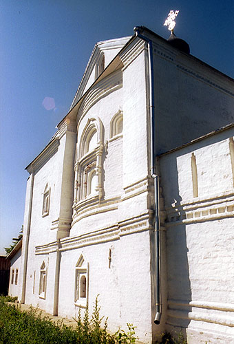
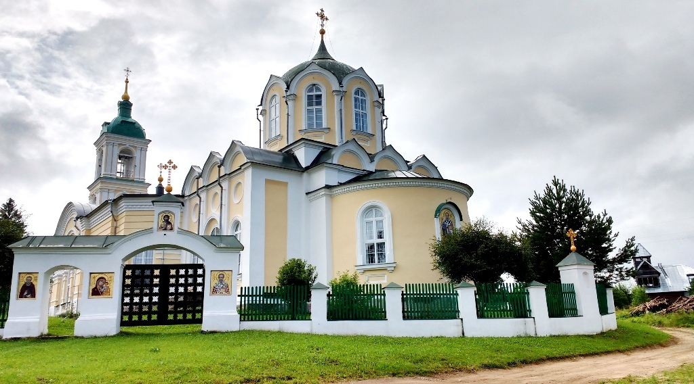
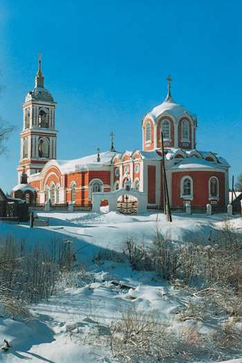
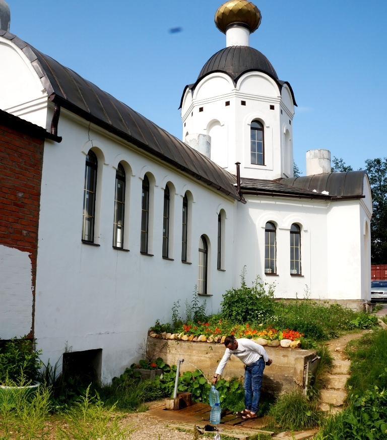
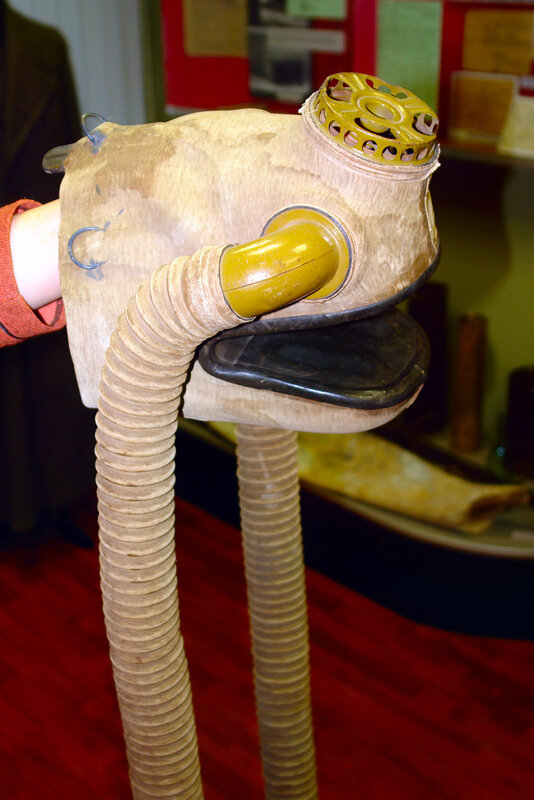

Селижарово
1. Троицкий Селижаров монастырь
У слияния рек высится заросший зеленый холм, на котором белеет тяжелый массивный куб самой древней постройки Селижарова. Этот холм и крепостного вида храм – основанного здесь в конце XV в. Троицкого Селижарова монастыря.
2. Петро-Павловская церковь
Петро-Павловская церковь Троицкого Селижаровского мужского монастыря, основанного на рубеже XV – XVI вв., предположительно князьями Волоцкими. В церкви Петра и Павла работает поистине уникальная мастерская, где делают вышитые иконы.
3. Погост Голенково с церковью во имя Святителя Христова Николая Мирликийского Чудотворца
А примерно в 25 километрах от поселка Селижарово, на живописном берегу реки Тихвины, находится погост Голенково с церковью во имя Святителя Христова Николая Мирликийского Чудотворца, где сохранился фаянсово-эмалевый иконостас, а также напольные подсвечники, изготовленные на одной из фабрик Товарищества М.С. Кузнецова в начале XX века. Всего в нашей стране сохранилось шесть таких иконостасов – в Тверской, Рязанской, Тамбовской областях и в Подмосковье. В XX веке секрет изготовления фаянсовых иконостасов был утрачен, но теперь это производство возрождают в Екатеринбурге.
4. Ельский источник
Источник известен более 500 лет. Когда-то местный помещик Квашнин-Самарин поставил здесь невысокий сруб, откуда брали воду – студеную, чистую, удивительно вкусную. Сейчас здесь часовня, здание с купелями. «Живоносный источник», в народе же его называют «источник Здоровец».
5. Противогаз для лошадей
Интересный экспонат музея – противогаз для лошадей времён 1-ой мировой войны.